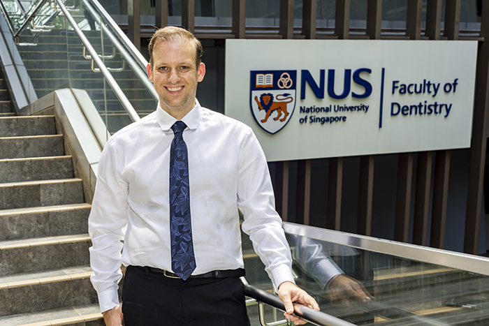

A/P Rosa receives the IADR Stephen Bayne Mid-Career Award 2021
The distinction, granted by the International Association for Dental, Oral and Craniofacial Research, recognises exceptional contributions to dental biomaterials research at the mid-career stage.

A/P Vinicius Rosa received the IADR Stephen Bayne Mid-Career Award at the 2021 IADR General Session & Exhibition. The award is named in honour of Dr. Stephen C. Bayne, a pioneer of dental materials research and a central figure in the evolution of dental composites. The distinction recognises researchers who, at the mid-career stage, have made significant and sustained contributions to the field.
A/P Rosa’s trajectory in dental materials science — spanning hydrogels for pulp tissue regeneration, bioactive cements, and biocompatibility testing — reflects precisely the type of impact the award seeks to honour. His work has been widely cited and has influenced international guidelines for the study of biomaterials in dentistry.
Recognising those who are building the scientific foundations of tomorrow’s dentistry.
The IADR, headquartered in Alexandria, Virginia (USA) and with members in more than 90 countries, is the world’s leading international organisation dedicated to advancing oral health research. Its awards are recognised as among the most prestigious in the field.